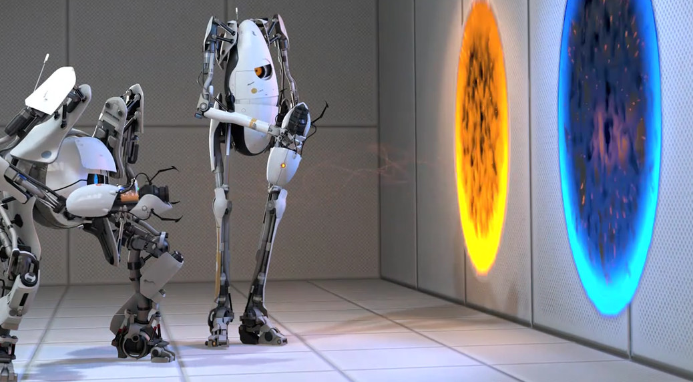

Portal 2 is a puzzle-platform game released in 2011. This game is one of my personal favorites and is critically acclaimed for it's unique story and gameplay. The game is available on Windows, Mac OS X, Linux, PlayStation 3, and Xbox 360.
You play as a robot that is in a testing facility and is equipped with a portal gun that allows them to set two linked portals and must use those portals and the environment to find a way to escape.
My favorite aspect about Portal 2 is the voice lines from the character GLaDOS. The eerie robotic voice guides you through the story, however she also serves as an antagonist with the goal of stopping you.